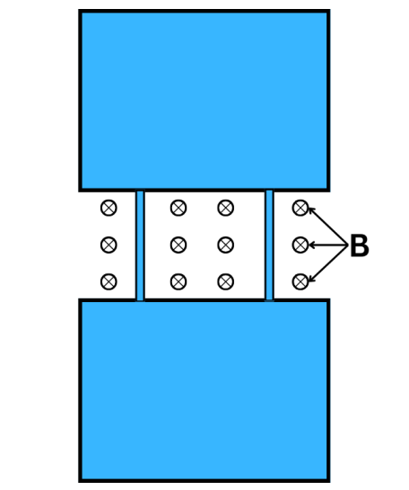

News About Our Research
-
03/30/2026 - Goldwater Scholarship: Congratulations to Cliff!
Congratulations to our member Cliff Sun on earning the prestigious Goldwater Scholarship— an honor awarded to only around 400 students nationwide! We’re incredibly proud of this outstanding achievement.
-
03/21/2026 - New Arxiv Submission: A Dayem Loop Qubit Based on Interfering Superconducting Nanowires
We propose a qubit design based on two parallel superconducting nanowires (i.e., a "Dayem loop qubit"). The inclusion of two nanowires instead of one leads to the Little-Parks effect, which provides an oscillator behavior for the qubit frequency as well as anharmonicity.

-
10/13/2025 - New Publication: Perfect superconducting diode and supercurrent range controller
We present a model of a perfect superconducting diode based on a superconducting quantum interference device made with multiple superconducting nanowires.

-
An ordinary superconducting quantum interference device (SQUID) contains two weak links connected in parallel. We model a multiple-wire SQUID (MW-SQUID), generalized in two ways. First, the number of weak links, which are provided by parallel superconducting nanowires, is larger than two. Second, the current-phase relationship of each nanowire is assumed linear, which is typical for homogeneous superconducting thin wires.